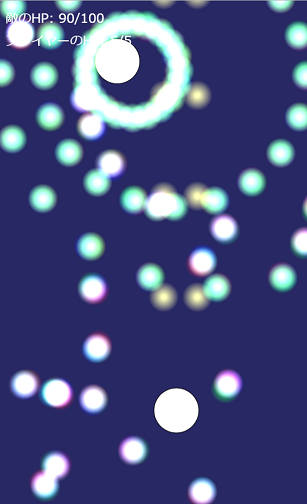

Python, JavaScriptの始め方
※ 以下の情報は、2019年3月時点のものです。
はじめに
Pythonとは

- Wikipedia: https://ja.wikipedia.org/wiki/Python
- Pythonは動的型付けなプログラミング言語。
- 実装にはCPython（https://www.python.org/）、PyPy（http://pypy.org/）などがある。CPythonが最も良く使われる。PyPyはCPythonよりも実行速度が速いが、起動は遅い。
Pythonのインストール方法

- https://www.python.org/ のDownloadsでダウンロードして実行する。Python3を使用してください。
- ネット上では、PythonのインストールにAnacondaを使うことを推奨している記事がありますが、Anacondaは初心者が使うと多くの問題を引き起こすため、使わない方がよいです。（参考1: Pythonの環境管理ツール良し悪し - Zopfcode, 参考2: condaとpip：混ぜるな危険 - onoz000’s blog)
JavaScriptとは
- Wikipedia: https://ja.wikipedia.org/wiki/JavaScript
- ブラウザやNode.jsで動かすことができる。
- 実装はV8やSpiderMonkeyなどいろいろある。
JavaScript (Node.js) のインストール方法

- https://nodejs.org/ja/ でダウンロードして実行する。 LTSはLong-term supportの略で、安定版のこと。LTSでも最新版でもどちらでもよい。
- Node.jsはV8を使用したJavaScript環境。 Wikipedia: https://ja.wikipedia.org/wiki/Node.js
ファイルから実行してみる
Pythonをファイルから実行してみよう
好きな場所に
main.pyというファイルを作って、以下の内容を書き込む91# "Hello, world!" と表示させる2print("Hello, world!")34# 関数 f(x) = 2x + 10 を定義5def f(x):6return 2 * x + 1078# f(5)を計算して結果を表示9print(f(5))コマンドプロンプト（ターミナル）を開いて、
py 今作ったファイルのパスと打つ （例:py C:\Users\foo\main.py） ※ MacOSやLinuxの場合は、pyの部分をpython3で読み替えてください。 以下のように表示されたら成功。21Hello, world!220
JavaScript (Node.js) をファイルから実行してみよう
好きな場所に
main.jsというファイルを作って、以下の内容を打ち込む101// "Hello, world!" と表示させる2console.log("Hello, world!")34// 関数 f(x) = 2x + 10 を定義5const f = (x) => {6return 2 * x + 10;7};89// f(5)を計算して表示10console.log(f(5))コマンドプロンプト（ターミナル）を開いて、
node 今作ったファイルのパスと打つ （例:node C:\Users\foo\main.js） 以下のように表示されたら成功。21Hello, world!220
JavaScript (ブラウザ) をファイルから実行してみよう
JavaScriptファイルをブラウザ上で実行するにはHTMLファイルが必要。 好きな場所に
index.htmlというファイルを作って、以下の内容を打ち込む812<html>3<head>4</head>5<body>6<script src="./main.js"></script>7</body>8</html>index.htmlと同じフォルダ内にmain.jsというファイルを作って、以下の内容を打ち込む101// "Hello, world!" と表示させる2console.log("Hello, world!")34// 関数 f(x) = 2x + 10 を定義5const f = (x) => {6return 2 * x + 10;7};89// f(5)を計算して表示10console.log(f(5))ブラウザ（Internet Explorerだとうまく実行できない可能性があるため、Microsoft EdgeやGoogle ChromeやMozilla Firefoxなどの他のブラウザを使用してください。）を開き、
index.htmlファイルをブラウザへドラッグしてください。F12キーを押して、出てきたパネル上でConsole (コンソール) タブを開いて、以下のように表示されていたら成功。
21Hello, world!220
REPLを実行してみる
REPLとは
多くの言語にはREPL (Read-Eval-Print Loop) が存在する。
- C#ならcsi、Javaならjshell、Goならgore、Rubyならirb、...
REPLを使うと、ファイルを用意せずに短いコードを簡単に実行できる。
REPL上では、入力した式の計算結果を
printやconsole.logを使わなくても表示してくれる。
PythonのREPLを実行しよう
コマンドプロンプト（ターミナル）を開いて、
pyと打つ※ MacOSやLinuxの場合は、
python3と打ってください。以下のように打つ。
71>>> "Hello, world!"2'Hello, world!'3>>> def f(x):4... return 2 * x + 105...6>>> f(5)720いろいろ入力してみてください。（
f(10)や2 + 4など）
JavaScript (Node.js) のREPLを実行しよう
コマンドプロンプト（ターミナル）を開いて、
nodeと打つ以下のように打つ。
81> "Hello, world!"2'Hello, world!'3> const f = (x) => {4return 2 * x + 10;5};6undefined7> f(5)820いろいろ入力してみてください。（
f(10)や2 + 4など）
JavaScript (ブラウザ) のREPLを実行しよう
ブラウザ（Microsoft EdgeやMozilla FirefoxやGoogle ChromeやInternet Explorerなど）を開き、F12キーを押す
※ 空のタブを使ってください。
Console (コンソール) タブを開き、以下のように打つ。
81> "Hello, world!"2"Hello, world!"3> const f = (x) => {4return 2 * x + 10;5};6undefined7> f(5)820いろいろ入力してみてください。（
f(10)や2 + 4など）
テキストエディタ

- テキストエディタにはMicrosoftが開発している、VSCodeを使うのがおすすめです。
- 起動が速くて高機能です。
- 特に、VSCodeはTypeScript（後述）で開発されているのもあって、TypeScriptを使うならVSCodeを使うべきです。
- 拡張機能のPython, TSLintを入れて使うべきです。他にも、Debugger for Chrome, Code Spell Checkerなども入れるといいと思います。（細かい使い方はネットで調べてください。）
Python, JavaScriptの学習方法
バージョンについて
PythonもJavaScriptも活発に開発されていて、アップデートが速いです。
そのため、ネット上のサイトや本を見るときはどのバージョンを対象にした記事なのかに注意しないと、コードが動かなかったり、古くて今は使われていない手法だったりします。
参考:
Pythonのバージョン
バージョン リリース年 1 1994 2 (2.0 ~ 2.7) 2000 3 (3.0 ~) 2008 ※ Python 2は2020年にサポート終了になる。 現時点での最新は3.7で、2018年にリリース。
JavaScriptのバージョン
バージョン リリース年 主な新機能 ES3 1999 ES4 リリース無し ES5 2009 strict mode, Arrayのメソッド追加 ES2015 (ES6) 2015 let, const, class, Arrayのメソッド追加, アロー関数, テンプレート文字列, for~of, Promise, ... ES2016 2016 累乗演算子, Arrayのincludesメソッド ES2017 2017 async/await
Pythonを学習しよう
CPythonの公式サイトがチュートリアルを用意してくれています。必ず読みましょう。 https://docs.python.org/ja/3/tutorial/index.html
理解できない部分がある場合、人に聞くか、本を買ってみるのもよいかもしれません。
JavaScript (ブラウザ) を学習しよう
ブラウザの1つであるMozilla Firefoxを開発しているMozillaが、MDN (Mozilla Developer Network) でJavaScriptのドキュメントを公開しています。 MDNのWebチュートリアル: https://developer.mozilla.org/ja/docs/Web/Tutorials
ただ、このチュートリアルは少し読みずらいので、他のサイトを見るか本を買った方が良いかもしれません。
- おすすめのサイト: uhyohyo.net/JavaScript初級者から中級者になろう （名前に反して、JavaScriptを全く知らない方にも良いサイトです。）
ブラウザ上で複数のJavaScriptファイルを組み合わせて使う場合、WebPackやParcelが必要になります（使わなくてもできるが、大変）。
JavaScriptはInternet Explorerではまともに開発できません（動作が重いことや、JavaScriptのバージョンが古いことなどが原因）。他のブラウザを使いましょう。
JavaScript (Node.js) を学習しよう
- Node.jsは基本的にコンソール上で動作するため、ブラウザ上でJavaScriptを実行するときに使える
documentやalertなどの画面の表示に関する変数・関数が存在しません。 - その代わり、Node.js専用の機能があり、 Node.jsのドキュメントで確認できます。
- Node.jsにはパッケージマネージャであるnpm (Node Package Manager)が付属しています。（Pythonのpipに相当）
ネット検索について
ネットでプログラミングに関することを調べるとき、残念ながら、日本語では1つもまともな記事がヒットしないということがよくあります。
Googleの検索欄に英語を打っても、デフォルトでは日本のページが優先されて表示されてしまいます。 英語版のGoogleを使うにはこのURLを使ってください。
あるいは、DuckDuckGoを使うという方法もあります。 検索結果のページの左上に"日本"というトグルボタンがあるので、これをOFFにすることで英語で検索できます。
JavaScriptの古い書き方について
JavaScriptは後方互換性を保ちながらアップデートされているため、今はまず使われない古い書き方が多く存在します。 それらの一部をここで示しておきます。
関数
101// 古い書き方2// ※ 変数名の巻き上げやthisの参照を目的として、あるいは趣味で、あえてこちらを使うこともある。3function foo() {4// 関数の本体5}67// 新しい書き方8const foo = () => {9// 関数の本体10};変数
71// 古い書き方2var x;34// 新しい書き方5// 再代入するならlet、再代入しないならconstを使う。6let x;7const x;クラス
251// 古い書き方2// functionでコンストラクタを定義し、prototypeでメソッドを定義する。3function Foo() {4this.x = 30;5}67Foo.prototype.bar = function() {8console.log(this.x);9};1011new Foo().bar(); // 301213// 新しい書き方14// class文を使う。class文は古い書き方の糖衣構文。15class Foo {16constructor() {17this.x = 30;18}1920bar() {21console.log(this.x);22}23}2425new Foo().bar();ブロックスコープ
101// 古い書き方2// (function(){})() や !function(){}() など。3(function() {4// スコープ5})();67// 新しい書き方8{9// スコープ10}
型付けしよう
- PythonやJavaScriptは動的型付け言語であり、変数に型がありません。
- これは不便なことが多いので、型付けする方法があります。積極的に使っていくべきです。
Pythonの型アノテーションを使う
- Pythonでは型アノテーションを使って型付けできます。
- 使い方はCPythonの公式ドキュメントを参照: https://docs.python.org/ja/3/library/typing.html
TypeScriptを使う
JavaScriptではTypeScriptを使って型付けできます。TypeScriptは、JavaScriptに型付け用の文法を足した言語で、JavaScriptに変換されてから実行されます。
公式サイトのチュートリアルを見た後、TypeScriptの型初級らへんを見るとよいと思います。（TypeScriptはJavaScriptさえ分かっていれば学習コストが低いことが特徴なので、とりあえずは軽く使ってみて、興味が出たらTypeScriptの型初級を読むといいです。）
TypeScriptの公式サイトのPlaygroundではブラウザ上で簡単にTypeScriptを試せます。
Node.jsでTypeScriptを使う場合、
ts-nodeが便利です。 コマンドプロンプト（ターミナル）上でnpm install -g ts-node typescriptと打つとts-nodeがインストールされます（ts-nodeの使用にはtypescriptのインストールも必要）。あとは、ts-node ファイル名と打てば、TypeScriptのファイルを実行できるはずです。（内部的には、TypeScriptのファイルがJavaScriptに変換されてからNode.jsで実行されます。）
※
ts-nodeコマンドが存在しないと表示された場合は、PATHを通す必要があります。Windowsなら%APPDATA%\npmを追加すればよいです。TypeScriptファイルをJavaScriptに変換するには、以下のコマンドをコマンドプロンプト（ターミナル）上で打てばよいです。
41# 以下のコマンドを変換したいファイルのあるディレクトリ上で実行する2npm init -y # npmの初期化。package.jsonが生成される。3npm install -D typescript # TypeScriptのインストール4npx tsc --init # TypeScriptの初期化。tsconfig.jsonが生成される。main.tsのようなファイルを作り、コードを書き、コマンドプロンプト（ターミナル）上でnpx tscと打てば、TypeScriptからJavaScriptへ変換されます。TypeScriptでは、変換先のJavaScriptのバージョンが低いときJavaScriptのいくつかの最新の機能（Arrayの関数やMapなど）を使えません。
tsconfig.jsonの"target"を"ES2017"とかにすれば使えるようになります。
クロスブラウザについて
各ブラウザのJavaScriptのバージョン（実装状況）はcaniuse.comで確認できます。

例えばES2015 (ES6)を使えるかは、https://caniuse.com/#search=ES6 で確認できます。これを見ると、IE (Internet Explorer)ではES6をほとんど使えないことがわかります。現在はBabelなどを使ってES2015以降のコードをES5以前のコードに変換して対応するのが主流ですが、IEは2020年の1月にサポートが切れるので、それ以降はIEを切り捨てる方向になると思われます。（TypeScriptはデフォルトではES5のコードに変換されます。）
サンプルプログラム1: 簡単なサーバ
この節について
ためしに簡単なプログラムを書いて、各言語の雰囲気を感じてもらうために書きました。
パッケージマネージャの使い方を示すために、意味もなく外部ライブラリを持ち出しています。
Python/Node.jsのコードは、実行環境やライブラリのアップデートで動かなくなることがあります。最新バージョンの環境で動かないことを確認した方は、管理者にご報告ください。
- 今回は入門のため使いませんが、実際にはpackage-lock.json (各ライブラリのどのバージョンを使うか書かれたファイル) や nvm (Node Version Manager) などで対処できます。
パッケージマネージャとは
- Pythonにはpip、Node.jsにはnpmというパッケージマネージャが付属している。
- パッケージマネージャは外部ライブラリのダウンロードに使うツールで、pipならpypi.org、npmならnpmjs.comからダウンロードしてくる。
- pipではダウンロードしたファイルはPC全体から呼び出せるが、npmでは
-gオプションを付けないとき特定のフォルダ内からのみ呼び出せる。 - 各ライブラリにはたいてい多くの依存ライブラリが存在して、1つのライブラリを
installすると同時にそのライブラリが依存している多くのライブラリが自動でダウンロードされる。 - ライブラリを使うときは、必ずライセンスを確認すること。（MITとかBSDとかGPLとか）
Python
まずpipを使って必要なライブラリをインストールする。
VSCodeを使う場合、
1 空のフォルダを好きな場所に作る
2 もしVSCodeで既に別のフォルダを開いていたら
Ctrl+K -> Oで閉じる3
Ctrl+K -> Ctrl+Fからフォルダを開く（あるいはコマンドプロンプト上でcode フォルダへのパス）4
Ctrl+Shift+@でコマンドプロンプト（ターミナル）を開いてコマンドを打つ - PowerShell/コマンドプロンプト/Bashの切り替えはCtrl+Shift+P->select default shellからできます。pipコマンドが存在しないと表示された場合は、py -m pip（MacOSやLinuxではpython3 -m pip）を使ってください。Windowsで「アクセスが拒否されました」と表示される場合、コマンドプロンプトを管理者権限で開いてもう一度実行してください。
pipコマンドでダウンロードしたファイルは、バージョンやOSによって異なるが、Windowsでバージョン3.7ならC:\Program Files\Python37下らへんに置かれます。インストールしたパッケージの一覧は
pip listで見れます。
11pip install -U Flask次に、ファイル
main.py（名前は何でもよい）を作って、以下のように書く。- 一行目で今インストールしたFlaskを呼び出しています。
/にアクセスしたら"Index Page"と訪問者数、/fooにアクセスしたら"Foo Page"を表示するプログラムです。
161from flask import Flask2app = Flask(__name__)34count = 05.route('/')6def index_page():7global count8count += 19return f"Index Page<br>あなたは{count}番目の訪問者です。"1011.route('/foo')12def foo_page():13return "Foo Page"1415app.run('0.0.0.0', 3000, False)16py main.py（あるいはpython3 main.py）で実行した状態で、http://localhost:3000/ を開くと"Index Page"と訪問者数、http://localhost:3000/foo を開くと"Foo Page"と表示される。
JavaScript/TypeScript
まずnpmを使って必要なライブラリをインストールする。
VSCodeを使う場合、
1 空のフォルダを好きな場所に作る
2 もしVSCodeで既に別のフォルダを開いていたら
Ctrl+K -> Oで閉じる3
Ctrl+K -> Ctrl+Fからフォルダを開く（あるいはコマンドプロンプト上でcode フォルダへのパス）4
Ctrl+Shift+@でコマンドプロンプト（ターミナル）を開いてコマンドを打つ - PowerShell/コマンドプロンプト/Bashの切り替えはCtrl+Shift+P->select default shellからできます。npmを使うには、最初に
npm init -yでの初期化が必要です。これによって、カレントディレクトリ下にpackage.jsonファイルが生成されます。npm installを使うと、ライブラリをダウンロードできます。ライブラリは-gを付けなかった場合カレントディレクトリ下のnode_modulesフォルダ内に置かれます。中を見ると多くのファイルが存在することを確認できると思います。TypeScriptで外部ライブラリを使うときには、同時に型定義ファイル（.d.tsで終わる名前を持つファイル）が必要になる。
@types/ライブラリ名として型定義ファイルが配布されている場合が多い。
131# 以下のコマンドはカレントディレクトリ下にファイルを生成するため、2# 新しくフォルダを作ってその中へcdで移動してから行うべき。3npm init -y45# TypeScriptに必要な外部ライブラリのインストールと初期化6npm install -g ts-node typescript # 既にts-nodeをインストールしたならこの行は不要7npm install -D typescript tslint # ツールをインストールする際には-Dを付けるとよい8tsc --init # もしtscコマンドが存在しないと言われたら、PATHを通すこと。Windowsなら%APPDATA%\npmに通す。9npx tslint --init # -gを付けずにインストールしたライブラリをコマンドとして実行するときは、npxを付ける。1011# サーバ用の外部ライブラリとその型定義ファイルのインストール12npm install express13npm install -D @types/express次にファイル
main.ts（名前は何でもよい）を作って、以下のように書く。ただし、1.でコマンドを打ったディレクトリにファイルを置くこと。- 一行目で先ほどインストールしたexpressをインポートしている。
TypeScriptでは、JavaScriptの
const X = require("Y")をimport X = require("Y")と書く必要がある。
131import express = require("express");2const app = express();34let count = 0;5app.get("/", (req, res) => {6count++;7res.send(`Index Page<br>あなたは${count}番目の訪問者です。`);8});910app.get("/foo", (req, res) => res.send("Foo Page"));1112const port = 3000;13app.listen(port, () => console.log("Listening on port " + port));- 一行目で先ほどインストールしたexpressをインポートしている。
TypeScriptでは、JavaScriptの
ts-node main.tsで実行した状態で、http://localhost:3000/ を開くと"Index Page"と訪問者数、http://localhost:3000/foo を開くと"Foo Page"と表示される。このままだと、
console.logの部分にCalls to 'console.log' are not allowed.tslint(no-console)という警告がでます。 無視してもいいですが、フォルダ内のtslint.jsonの"rules"に以下のように一行足せば消えます。31"rules": {2"no-console": false3},
何をしたのか
- 自分のPCが接続されているLAN内からのみアクセスできるサーバを作りました。
- 自分のプライベートIPアドレスがわかれば、他のPCからもアクセスできます。
- コマンドプロンプトでipconfig（MacOSやLinuxならifconfig）と打ち、
192.168.や10.や172.で始まるアドレスを探してください（複数ありますが、"IPv4アドレス"や"inet"となっているものです）。これがプライベートアドレスなので、たとえば192.168.2.104だったら、http://192.168.2.104:3000 で同一LAN内の他のPCからもアクセスできます。スマホ等で試してみてください。
pypi.orgとnpmjs.comを見よう
先ほど使用した外部ライブラリをpypi.orgとnpmjs.comで見てみよう。英語しかないが、簡単な使い方や、各ライブラリのドキュメントやホームページへのリンクなどを確認できる。
- Flask: https://pypi.org/project/Flask/
- express: https://www.npmjs.com/package/express
- typescript: https://www.npmjs.com/package/typescript
- ts-node: https://www.npmjs.com/package/ts-node
- @types/express: https://www.npmjs.com/package/@types/express
npmなら、weekly downloads で人気度を確認できる。pypiはダウンロード数を公開していないので、ライブラリのGitHubページのスター数を見るとよい。
@typesとは何か
- npmにおいて、"@A/B"という名前のパッケージ名は、"ユーザーAが公開しているパッケージB"という意味。@typesはDefinitely Typedという団体が管理している。
サンプルプログラム2: Parcel & p5.js
この節について
- この節はTypeScriptの詳細な使い方を示すために書きました。
- 完全な初心者用ではないです。コードはすべてCC0です。
ライブラリのインストール
- 今回は、p5.jsを使います。（最初はPixiJSv4を使おうと思ったが、型定義ファイルが不完全だったり難易度が高かったりするのでやめた。ただ、機能はPixiJSの方が上なはず。）
- ブラウザ上で複数ファイルのJavaScriptファイルを動かすために、Parcelを使います。（WebPackでもよいが、こちらの方が簡単。）
111npm init -y23# Parcel, TypeScript4npm install -g parcel-bundler # 既にparcel-bundlerをインストールしたならこの行は不要5npm install -D typescript tslint6npx tslint --init7npx tsc --init89# p5.js10npm install p511npm install -D @types/p5Parcelを試す
まず、上記のコマンドを打ったのと同じディレクトリで、
index.htmlを作る。1212<html>3<head>4<meta charset="UTF-8">5<meta name="viewport" content="width=device-width, initial-scale=1.0">6<meta http-equiv="X-UA-Compatible" content="ie=edge">7<title>Sample Game</title>8</head>9<body>10<script src="./main.ts"></script>11</body>12</html>main.tsも作る。11document.body.innerText = `3 + 2 = ${3 + 2}`;あとは、コマンドプロンプト（ターミナル）で
parcel index.htmlと打てば、ビルドされて同時にサーバーが起動する。 http://localhost:1234 にブラウザでアクセスして、3 + 2 = 5と表示されていることを確認しよう。（parcel index.html --openとすれば、自動で開く。）コードを編集して保存すると、ブラウザがリロードされて表示が変わる。
Ctrl + Cでサーバーを終了させる。
p5.jsを試す
main.tsに以下のように書く
- p5.jsをglobal mode（デフォルト）で使う場合@types/p5/global.d.tsを使うようにと書いてあったため、p5/globalをインポートしています。
161import "p5";2import {} from "./node_modules/@types/p5/global.d";34function setup() {5createCanvas(640, 480);6}78function draw() {9ellipse(50, 50, 80, 80);10}1112// p5はグローバルに定義されたsetupやdraw関数を参照するため、13// 手作業でグローバルオブジェクト（window）に各関数を追加する。14(window as any).setup = setup;15(window as any).draw = draw;16parcel index.htmlで実行して http://localhost:1234/ を見れば、楕円が表示されているはず。
型定義ファイルの不足を補おう
p5.jsのリファレンスのKeyboardの欄を見ると、キー入力の判定にはkeyIsDownを使うことがわかる。
レファレンスではこのように使っている。
31if (keyIsDown(RIGHT_ARROW)) {2// 右矢印キーを押しているときの処理3}main.ts 円がキー入力で動くようにする。
181import "p5";2import {} from "./node_modules/@types/p5/global.d";34function setup() {5createCanvas(640, 480);6}78let x = 50;9function draw() {10clear();11if (keyIsDown(RIGHT_ARROW)) {12x += 4;13}14ellipse(x, 50, 80, 80);15}1617(window as any).setup = setup;18(window as any).draw = draw;すると、
RIGHT_ARROWに、Cannot find name 'RIGHT_ARROW'.というエラーがでる（既に修正されていたら、出ない可能性もある）。p5とその型定義である@types/p5は別々に作られているため、実際にはRIGHT_ARROWという変数は存在するにも関わらず、型定義にRIGHT_ARROWが存在しなくてエラーになっている。これはTypeScriptではよくあること。解決方法はいくつかある。
111// a. 呼び出し元オブジェクトをany型にキャストする2// RIGHT_ARROW は window.RIGHT_ARROW の略なので、3// windowをany（型チェックを無視することを表す型）にキャストすることで、強制的にエラーをなくせる。4if (keyIsDown((window as any).RIGHT_ARROW) {5// ...6}78// b. declare文で型を定義する9// 型定義ファイルはdeclareを使って型を定義している。10// 自分でdeclareで型定義を付け足す。11declare const RIGHT_ARROW: number; // main.tsの好きな場所に書く
シューティングゲーム

シューティングゲームを書きました。参考にしてください。
趣味でreadonlyを全プロパティにつけていますが、気にしないでください。
main.ts
3341import "p5";2import { Graphics } from "p5";3import {} from "./node_modules/@types/p5/global.d";4import { RigidBody } from "./rigid_body";5import { Vec2D, Vec3D } from "./vec";67const SCREEN_SIZE: { readonly w: number, readonly h: number} = { w: 550, h: 900 };8const PLAYER_SPEED = 8;910interface Light {11color: Vec3D;12pos: Vec2D;13}1415interface Shot {16readonly lights: ReadonlyArray<Light>;17readonly rigidBody: RigidBody;18readonly vibration: number;19}2021const Shot = {22new: (pos: Vec2D, velocity: Vec2D, colors: ReadonlyArray<Vec3D>, vibration: number): Shot => {23return {24lights: colors.map((color) => ({ color, pos: Vec2D.new(0, 0) })),25rigidBody: RigidBody.new(pos, velocity),26vibration,27};28},29update: (shot: Shot): Shot => {30return {31lights: shot.lights.map((light) => {32const posMoveFor = Vec2D.new(33Math.random() * shot.vibration,34Math.random() * shot.vibration);35const pos = Vec2D.add(36Vec2D.times(light.pos, 0.9),37Vec2D.times(posMoveFor, 0.1));38return {39color: light.color,40pos,41};42}),43rigidBody: RigidBody.update(shot.rigidBody),44vibration: shot.vibration,45};46},47};4849interface GameState {50readonly playerPos: Vec2D;51readonly enemyPos: Vec2D;52readonly playerHp: number;53readonly enemyHp: number;54readonly playerShots: ReadonlyArray<Shot>;55readonly enemyShots: ReadonlyArray<Shot>;56readonly frameCount: number;57readonly scene: "Playing" | "GameClear" | "GameOver";58}5960const movePlayer = (playerPos: Vec2D): Vec2D => {61if (keyIsDown(RIGHT_ARROW)) {62playerPos = Vec2D.add(playerPos, Vec2D.new(PLAYER_SPEED, 0));63}64if (keyIsDown(LEFT_ARROW)) {65playerPos = Vec2D.add(playerPos, Vec2D.new(-PLAYER_SPEED, 0));66}67if (keyIsDown(DOWN_ARROW)) {68playerPos = Vec2D.add(playerPos, Vec2D.new(0, PLAYER_SPEED));69}70if (keyIsDown(UP_ARROW)) {71playerPos = Vec2D.add(playerPos, Vec2D.new(0, -PLAYER_SPEED));72}73return Vec2D.new(74Math.min(SCREEN_SIZE.w, Math.max(0, playerPos.x)),75Math.min(SCREEN_SIZE.h, Math.max(0, playerPos.y)));76};7778const moveEnemy = (enemyPos: Vec2D, frameCount: number): Vec2D => {79return Vec2D.new(80300 + Math.cos(frameCount / 30) * 100,81100 + Math.sin(frameCount / 30) * 20);82};8384const appendNewPlayerShots = (85playerShots: ReadonlyArray<Shot>,86playerPos: Vec2D, frameCount: number): ReadonlyArray<Shot> => {87const shotsGenerated = new Array<Shot>();88if (frameCount % 9 === 0) {89shotsGenerated.push(Shot.new(90Vec2D.add(playerPos, Vec2D.new(-30, -30)),91Vec2D.new(0, -20),92[Vec3D.new(255, 255, 100)], 0));93shotsGenerated.push(Shot.new(94Vec2D.add(playerPos, Vec2D.new(30, -30)),95Vec2D.new(0, -20),96[Vec3D.new(255, 255, 100)], 0));97}9899return [playerShots, shotsGenerated];100};101102const createEnemyShot = (pos: Vec2D, theta: number, speed: number, color: Vec3D, vibration: number): Shot => {103const unitVector = Vec2D.new(Math.cos(theta), Math.sin(theta));104const colors = [color];105colors.push(106Vec3D.new(0, 0, 255), Vec3D.new(255, 0, 0), Vec3D.new(0, 255, 0));107return Shot.new(108Vec2D.add(pos, Vec2D.times(unitVector, 30)),109Vec2D.times(unitVector, speed),110colors, vibration);111};112113const appendNewEnemyShots = (114enemyShots: ReadonlyArray<Shot>,115enemyPos: Vec2D, frameCount: number): ReadonlyArray<Shot> => {116const shotsGenerated = new Array<Shot>();117118switch (Math.floor(frameCount / 400) % 4) {119case 0:120// 全方向ランダム121if (frameCount % 25 === 0) {122for (let i = 0; i < 8; i++) {123shotsGenerated.push(createEnemyShot(124enemyPos, Math.random() * Math.PI * 2, 3, Vec3D.new(255, 255, 255), 40));125}126}127break;128case 1:129// n方向固定130if (frameCount % 25 === 0) {131const numWays = 20;132for (let i = 0; i < numWays; i++) {133shotsGenerated.push(createEnemyShot(134enemyPos, i / numWays * Math.PI * 2, 6, Vec3D.new(0, 255, 0), 15));135}136}137break;138case 2:139// n方向回転 * m140if (frameCount % 18 === 0) {141const numWays = 13;142for (let i = 0; i < numWays; i++) {143shotsGenerated.push(createEnemyShot(144enemyPos, (i + frameCount / 100) / numWays * Math.PI * 2, 8, Vec3D.new(0, 255, 255), 12));145shotsGenerated.push(createEnemyShot(146enemyPos, (i - frameCount / 100) / numWays * Math.PI * 2, 8, Vec3D.new(0, 0, 255), 12));147}148}149break;150case 3:151// 全方向ランダム（高速）152if (frameCount % 18 === 0) {153for (let i = 0; i < 20; i++) {154shotsGenerated.push(createEnemyShot(155enemyPos, Math.random() * Math.PI * 2, 15, Vec3D.new(255, 0, 255), 15));156}157}158break;159}160161return [enemyShots, shotsGenerated];162};163164const handleShotsCollisions = (aPos: Vec2D, bShots: ReadonlyArray<Shot>, aHp: number)165: { newBShots: ReadonlyArray<Shot>, newAHp: number} => {166const enemyShotsFiltered = bShots.filter((shot) => {167if (Vec2D.abs(Vec2D.subtract(shot.rigidBody.pos, aPos)) < 20) {168aHp -= 1;169return false;170}171return true;172});173return {174newAHp: aHp,175newBShots: enemyShotsFiltered,176};177};178179const isShotInScreen = (shotPos: Vec2D): boolean => {180return -30 < shotPos.x && shotPos.x < SCREEN_SIZE.w + 30 &&181-30 < shotPos.y && shotPos.y < SCREEN_SIZE.h + 30;182};183184const getGameScene = (185scene: GameState["scene"], enemyHp: number, playerHp: number): GameState["scene"] => {186if (scene !== "Playing") {187return scene;188}189if (enemyHp <= 0) {190return "GameClear";191} else if (playerHp <= 0) {192return "GameOver";193}194return scene;195};196197const update = (gameState: GameState): GameState => {198// プレイヤー、敵の移動199const playerPos = movePlayer(gameState.playerPos);200const enemyPos = moveEnemy(gameState.enemyPos, gameState.frameCount);201202// 弾の生成と移動と削除203const playerShots: ReadonlyArray<Shot> =204appendNewPlayerShots(gameState.playerShots, playerPos, gameState.frameCount)205.map((shot) => Shot.update(shot))206.filter((shot) => isShotInScreen(shot.rigidBody.pos));207const enemyShots: ReadonlyArray<Shot> =208appendNewEnemyShots(gameState.enemyShots, enemyPos, gameState.frameCount)209.map((shot) => Shot.update(shot))210.filter((shot) => isShotInScreen(shot.rigidBody.pos));211212// プレイヤーと敵の弾の衝突213const { newBShots: enemyShotsAfterCollision, newAHp: playerHpAfterCollision} =214handleShotsCollisions(playerPos, enemyShots, gameState.playerHp);215216// 敵とプレイヤーの弾の衝突217const { newBShots: playerShotsAfterCollision, newAHp: enemyHpAfterCollision} =218handleShotsCollisions(enemyPos, playerShots, gameState.enemyHp);219220return {221enemyHp: enemyHpAfterCollision,222enemyPos,223enemyShots: enemyShotsAfterCollision,224frameCount: gameState.frameCount + 1,225playerHp: playerHpAfterCollision,226playerPos,227playerShots: playerShotsAfterCollision,228scene: getGameScene(gameState.scene, enemyHpAfterCollision, playerHpAfterCollision),229};230};231232const drawUI = (gameState: GameState): void => {233switch (gameState.scene) {234case "GameClear":235textSize(35);236textAlign(CENTER);237text("ゲームクリア！", 0, SCREEN_SIZE.h / 2, SCREEN_SIZE.w);238break;239case "GameOver":240textSize(35);241textAlign(CENTER);242text("ゲームオーバー！", 0, SCREEN_SIZE.h / 2, SCREEN_SIZE.w);243break;244case "Playing":245textSize(23);246textAlign(LEFT);247text(`敵のHP: ${gameState.enemyHp}/100`, 10, 40);248text(`プレイヤーのHP: ${gameState.playerHp}/5`, 10, 80);249break;250}251252if (gameState.scene !== "Playing") {253textSize(23);254textAlign(RIGHT);255text("画面をクリックしてリセット", 10, 40, SCREEN_SIZE.w - 10);256}257};258259const drawShots = (shots: ReadonlyArray<Shot>): void => {260shots.forEach((shot) => {261shot.lights.forEach((light) => {262const pos = Vec2D.add(shot.rigidBody.pos, light.pos);263image(264getShotLightImage(light.color),265pos.x - 20, pos.y - 20, 55, 55);266});267});268};269270const drawGame = (gameState: GameState): void => {271background(40, 40, 100);272273// 敵274fill(color(255, 255, 255));275circle(gameState.enemyPos.x, gameState.enemyPos.y, 40);276circle(gameState.playerPos.x, gameState.playerPos.y, 40);277278// 弾279blendMode(ADD);280drawShots(gameState.playerShots);281drawShots(gameState.enemyShots);282blendMode(BLEND);283284// 画面上の表示285drawUI(gameState);286};287288const getShotLightImage = (() => {289const imgList: { [rgb: string]: Graphics } = {};290return (color: Vec3D): Graphics => {291const colorName = `${color.x}, ${color.y}, ${color.z}`;292if (colorName in imgList) {293return imgList[colorName];294}295const img: any = createGraphics(100, 100);296img.noStroke();297for (let i = 50; i > 0; i--) {298const circleColor = Vec3D.add(299Vec3D.times(color, (1 - i / 50)),300Vec3D.times(Vec3D.new(0, 0, 0), i / 50));301img.fill(circleColor.x, circleColor.y, circleColor.z);302img.circle(img.width / 2, img.height / 2, i);303}304imgList[colorName] = img;305return img;306};307})();308309{310(window as any).setup = () => {311createCanvas(SCREEN_SIZE.w, SCREEN_SIZE.h);312};313314const initialGameState: GameState = {315enemyHp: 100,316enemyPos: Vec2D.new(SCREEN_SIZE.w / 2, 100),317enemyShots: [],318frameCount: 0,319playerHp: 5,320playerPos: Vec2D.new(SCREEN_SIZE.w / 2, 700),321playerShots: [],322scene: "Playing",323};324325let gameState = initialGameState;326327(window as any).draw = () => {328if (gameState.scene !== "Playing" && mouseIsPressed) {329gameState = initialGameState;330}331gameState = update(gameState);332drawGame(gameState);333};334}p5_key_names.ts
141declare const ALT: 18;2declare const BACKSPACE: 8;3declare const CONTROL: 17;4declare const DELETE: 46;5declare const DOWN_ARROW: 40;6declare const ENTER: 13;7declare const ESCAPE: 27;8declare const LEFT_ARROW: 37;9declare const OPTION: 18;10declare const RETURN: 13;11declare const RIGHT_ARROW: 39;12declare const SHIFT: 16;13declare const TAB: 9;14declare const UP_ARROW: 38;rigid_body.ts
151import { Vec2D } from "./vec";23// 速度と位置を持つ物体4export interface RigidBody {5pos: Vec2D;6velocity: Vec2D;7}89export const RigidBody = {10new: (pos: Vec2D, velocity: Vec2D) => ({ pos, velocity }),1112// 位置に速度を加算13update: (obj: RigidBody): RigidBody =>14({ pos: Vec2D.add(obj.pos, obj.velocity), velocity: obj.velocity }),15};vec.ts
671// イミュータブルな二次元ベクトル2export interface Vec2D {3readonly x: number;4readonly y: number;5}67export const Vec2D = {8// 加減乗除, 絶対値, 生成9abs: (a: Vec2D): number =>10Math.sqrt(a.x * a.x + a.y * a.y),11add: (a: Vec2D, b: Vec2D): Vec2D => ({12x: a.x + b.x,13y: a.y + b.y,14}),15divide: (a: Vec2D, x: number): Vec2D => ({16x: a.x / x,17y: a.y / x,18}),19dot: (a: Vec2D, b: Vec2D): number =>20a.x * b.x + a.y * b.y,21new: (x: number, y: number): Vec2D => ({ x, y }),22subtract: (a: Vec2D, b: Vec2D): Vec2D => ({23x: a.x - b.x,24y: a.y - b.y,25}),26times: (a: Vec2D, x: number): Vec2D => ({27x: a.x * x,28y: a.y * x,29}),30};3132// イミュータブルな三次元ベクトル33export interface Vec3D {34readonly x: number;35readonly y: number;36readonly z: number;37}3839export const Vec3D = {40// 加減乗除, 絶対値, 生成41abs: (a: Vec3D): number =>42Math.sqrt(a.x * a.x + a.y * a.y + a.z * a.z),43add: (a: Vec3D, b: Vec3D): Vec3D => ({44x: a.x + b.x,45y: a.y + b.y,46z: a.z + b.z,47}),48divide: (a: Vec3D, x: number): Vec3D => ({49x: a.x / x,50y: a.y / x,51z: a.z / x,52}),53dot: (a: Vec3D, b: Vec3D): number =>54a.x * b.x + a.y * b.y,55new: (x: number, y: number, z: number): Vec3D =>56({ x, y, z }),57subtract: (a: Vec3D, b: Vec3D): Vec3D => ({58x: a.x - b.x,59y: a.y - b.y,60z: a.z - b.z,61}),62times: (a: Vec3D, x: number): Vec3D => ({63x: a.x * x,64y: a.y * x,65z: a.z * x,66}),67};index.html
2812<html>3<head>4<meta charset="UTF-8">5<meta name="viewport" content="width=device-width, initial-scale=1.0">6<meta http-equiv="X-UA-Compatible" content="ie=edge">7<title>Sample Game</title>8<style>9* {10margin: 0;11padding: 0;12}13html, body {14height: 100%;15background: black;16}17.p5Canvas {18display: block;19margin: auto;20width: auto !important;21height: 100% !important;22}23</style>24</head>25<body>26<script src="./main.ts"></script>27</body>28</html>
結論
- CPythonの公式ドキュメントやuhyohyo.netやTypeScriptの型初級(uhyo)などを読みましょう。